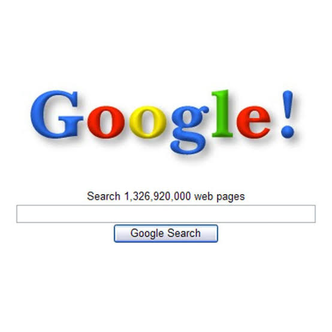
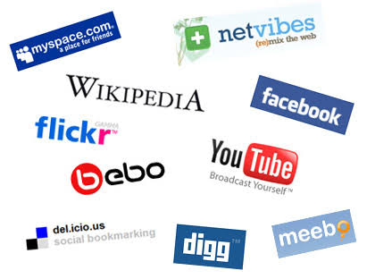
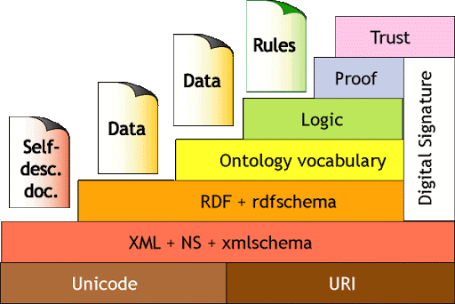

2000s
Inicio
60´s
80's
90´s
2001: Impacto de la fiebre punto com.

2004 Aparición de la Web 2.0 El término fue utilizado por primera vez por Darcy
DiNucci en 1999 en uno de sus artículos, aunque no fue hasta 2004 cuando
Tim O'Reilly lo hizo popular.
2004: Nace el concepto 2.0

2006: Estimaciones del número total de páginas web visitadas (600.000 millones).
2007: Comienza la transformació n hacia Web 3.0

2010 Tim Berners Lee. Creador de la web semántica
2013 Futuro de la evolución Web 3.0


Documento PDF